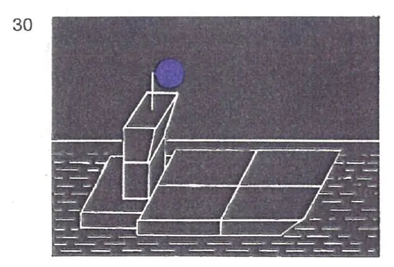
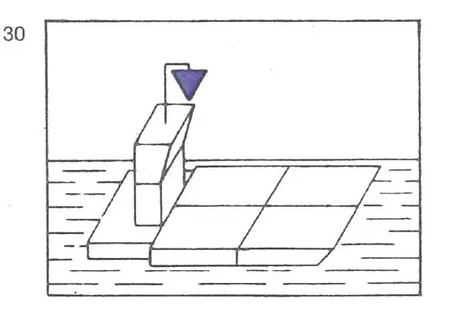
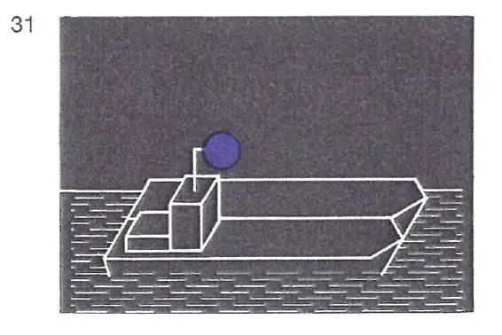
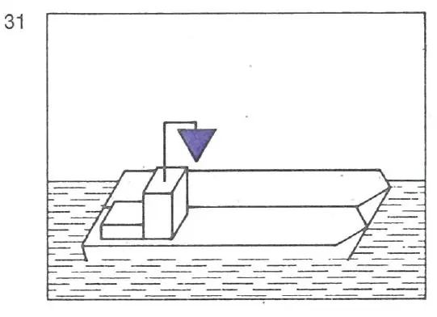
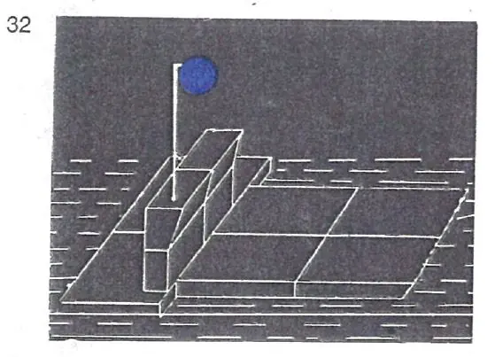
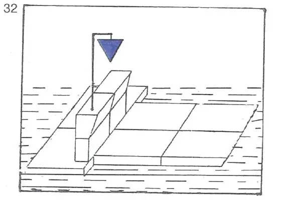

§ 3.14 Zusätzliche Bezeichnung der Fahrzeuge in Fahrt bei Beförderung bestimmter gefährlicher Güter(Anlage 3 Bild 27a, 27b, 28a, 28b, 29, 30, 31, 32)
Rheinschiffahrtspolizeiverordnung
1. | Fahrzeuge in Fahrt, die bestimmte entzündbare Stoffe nach ADNR befördern, müssen außer der anderen nach dieser Verordnung vorgeschriebenen Bezeichnung folgende Bezeichnung nach ADNR Nr. 7.1.5.0 oder 7.2.5.0 führen: | ||
- | bei Nacht: | ||
ein blaues Licht; | |||
- | bei Tag: | ||
einen blauen Kegel mit der Spitze nach unten. | |||
Dieses Zeichen muss an einer geeigneten Stelle und so hoch geführt werden, dass sie von allen Seiten sichtbar ist; anstelle des blauen Kegels kann auch je ein blauer Kegel auf dem Vor- und Hinterschiff in einer Höhe von mindestens 3 m über der Ebene der Einsenkungsmarken geführt werden. | |||
2. | Fahrzeuge in Fahrt, die bestimmte gesundheitsschädliche Stoffe nach ADNR befördern, müssen außer der anderen nach dieser Verordnung vorgeschriebenen Bezeichnung folgende Bezeichnung nach ADNR Nr. 7.1.5.0 oder 7.2.5.0 führen: | ||
- | bei Nacht: | ||
zwei blaue Lichter; | |||
- | bei Tag: | ||
zwei blaue Kegel mit der Spitze nach unten. | |||
Diese Zeichen müssen übereinander in einem Abstand von etwa 1 m an einer geeigneten Stelle und so hoch geführt werden, dass sie von allen Seiten sichtbar sind; anstelle der zwei blauen Kegel können auch je 2 blaue Kegel auf dem Vor- und Hinterschiff, von denen der untere in einer Höhe von mindestens 3 m über der Ebene der Einsenkungsmarken angebracht ist, geführt werden. | |||
3. | Fahrzeuge in Fahrt, die bestimmte explosive Stoffe nach ADNR befördern, müssen außer der anderen nach dieser Verordnung vorgeschriebenen Bezeichnung folgende Bezeichnung nach ADNR Nr. 7.1.5.0 oder 7.2.5.0 führen: | ||
- | bei Nacht: | ||
drei blaue Lichter; | |||
- | bei Tag: | ||
drei blaue Kegel mit der Spitze nach unten. | |||
Diese Zeichen müssen übereinander in einem Abstand von jeweils etwa 1 m an einer geeigneten Stelle und so hoch geführt werden, dass sie von allen Seiten sichtbar sind. | |||
4. | Fährt oder fahren in einem Schubverband oder in einer Zusammenstellung gekuppelter Fahrzeuge ein Fahrzeug oder mehrere Fahrzeuge nach Nummer 1, 2 oder 3, muß die Bezeichnung nach Nummer 1, 2 oder 3 auf dem Fahrzeug geführt werden, das den Verband oder die Zusammenstellung fortbewegt. | ||
 |  | ||
 |  | ||
5. | Schubverbände, die durch zwei schiebende Fahrzeuge nebeneinander fortbewegt werden, müssen die Bezeichnung nach Nummer 4 auf dem steuerbordseitigen, schiebenden Fahrzeug führen. | ||
 |  | ||
6. | Fahrzeuge, Schubverbände und gekuppelte Fahrzeuge, die verschiedene gefährliche Güter nach Nummer 1, 2 oder 3 zusammen befördern, führen die Bezeichnung für das gefährliche Gut, das die größte Anzahl der blauen Lichter oder blauen Kegel erfordert. | ||
7. | Fahrzeuge, die keine Bezeichnung nach Nummer 1, 2 oder 3 führen müssen, jedoch nach ADN Abschnitt 1.16.1 ein Zulassungszeugnis besitzen und die Sicherheitsbestimmungen einhalten, die für ein Fahrzeug nach Nummer 1 gelten, können bei der Annäherung an Schleusen die Bezeichnung nach Nummer 1 führen, wenn sie zusammen mit einem Fahrzeug geschleust werden wollen, das die Bezeichnung nach Nummer 1 führen muss. | ||
8. | Die Lichtstärke der in diesem Paragraphen vorgeschriebenen blauen Lichter muß mindestens derjenigen der gewöhnlichen blauen Lichter entsprechen. |